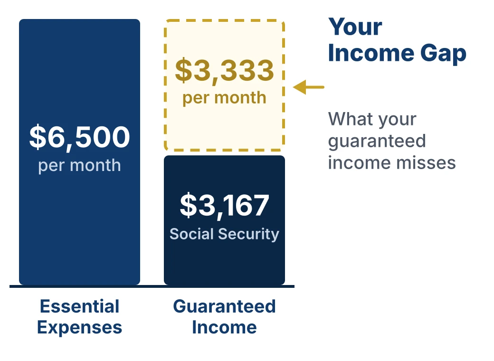
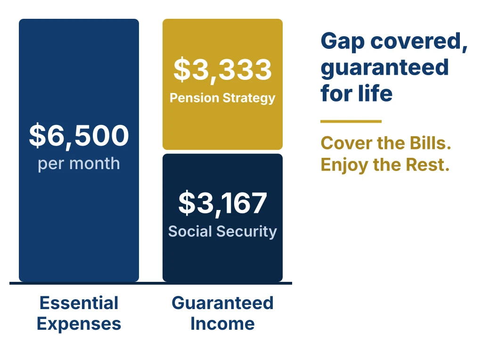

How We Create Your Pension
From finding your income gap to a guaranteed paycheck for life, here's how it works and what you can expect.
Finding Your Income Gap
Everything starts with two numbers.
Your essential expenses: housing, healthcare, food, and transportation. The bills that come every month, no matter what the market does.
Your guaranteed income: Social Security, any pension, and anything else paid on a set schedule. Don’t know your Social Security amount? Create your Social Security account to see your projected benefit.
The difference is your income gap. It doesn’t mean you saved wrong or waited too long. It’s simply what your guaranteed income doesn’t cover.

Illustrative example only. Your numbers will vary.
That gap is what we solve for. Most people assume it has to come from their portfolio. It doesn’t.
Create Your Own Pension
Social Security is your baseline income. Your Pension Strategy builds on top of it, with terms set by contract, not by Congress.
A portion of your retirement savings becomes a contractually guaranteed monthly income that covers your essential expenses for life, regardless of how long you live or what the market does. Not all of your savings. Just enough to close the gap.

How We Put It in Place
- I present three options that best fit your needs and goals.
- We compare them side by side, so the differences and tradeoffs are clear.
- You make the choice. No pressure, ever.
- We complete the paperwork and you fund your Pension Strategy. Your income is locked in and ready to start when you planned.
When your bills are covered, you never have to sell investments in a down market to pay them. That helps protect you from the biggest risk to retirement savings, sequence of returns risk, and lets your portfolio stay invested and grow for the things you enjoy.
Travel. Family. Home. Causes you care about.
Want the details? Read What a Pension Strategy Actually Is.
Want to dig deeper? Explore all our articles and tools.
When the Market Pays the Bills
Hope retired at 65 with $1,000,000 and needed $40,000 a year from it to close her income gap. She retired in 2000, just as the market turned down.
Her twin sister Helen had the same $40,000 gap and lived through the same market. But her income came from a Pension Strategy, so she never had to sell a dollar in a down market to pay the bills.
Hope’s portfolio did recover in time. But every paycheck along the way depended on the market, and in other stretches, like 1929, the money ran out.
Ready to See What Your Numbers Look Like?
See what this could mean for you in a 30-minute Income Analysis.
No pressure. No obligation.